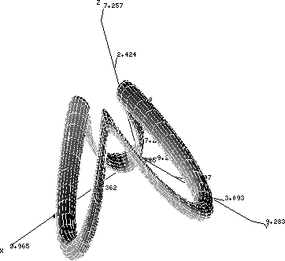

TPJ One-Liner #13Little-known facts about qr// (new with Perl 5.005): it has a magic print value, and it's an object of type Regexp.
% perl -le 'print "My regex: ", qr/^watch/i'
My regex: (?i-xsm:^watch this)
$rob = qr/red/i;
if ($rob->match("Fred Flintstone")) {
print "Got obj fred!\n";
}
sub Regexp::match {
my $self = shift;
my $arg = @_ ? shift : $_;
return $arg =~ /$arg/;
}
Courtesy of Tom Christiansen |
TPJ One-Liner #14Transpose a two-dimensional array:
@matrix_t = map{my$x=$_;[map {$matrix[$_][$x]}
0..$#matrix]}0..$#{$matrix[0]};
Courtesy of Tuomas J. Lukka |
TPJ One-Liner #15

use PDL; use PDL::Graphics::TriD; $s=40;$a=zeroes 2*$s,$s/2;$t=$a->xlinvals(0,6.284);$u=$a->ylinvals (0,6.284);$o=5;$i=1;$v=$o-$o/2*sin(3*$t)+$i*sin$u; imag3d([$v*sin$t,$v*cos$t,$i*cos($u)+$o*sin(3*$t)]); Courtesy of Tuomas J. Lukka |
TPJ One-Liner #16This code converts any GIF to an HTML table--each cell of the table corresponds to a pixel of the image. Use this to make your web advertisements seem like important content and circumvent Lincoln's Apache::AdBlocker. :
This code is online at http://tpj.com/tpj/one-liners.
use GD;$f='#ffffff';$T=table;sub p{print @_}
p"<body bgcolor=$f>";for(@ARGV){open*G,$_ or(warn("$_:
$!")&&next);$g=GD::Image->newFromGif(G)||(warn$_,
": GD error"and next);@c=map{$_!=$g->transparent
?sprintf'#'.('%.2x'x3),$g->rgb($_):$f}0..
$g->colorsTotal;p"<$T border=0 cellpadding=0
cellspacing=0>";($x,$y)=$g->getBounds;for$j(0..$y)
{p"<tr>";for($i=0;$i<$x;$i++){$s=1;$s++&&$i++while($i+1
<$x&&$g->getPixel($i+1,$j)==$g->getPixel($i,$j));p"
<td bgcolor=",$c[$g->getPixel($i,$j)],"
colspan=$s> "}}p"</$T>"}
Courtesy of Mike Fletcher |
TPJ One-Liner #17Ever wish backquotes didn't interpolate variables? qx() is a synonym for backquotes, but if you use single quotes as a delimiter, it won't interpolate: qx'echo $HOME' works.Courtesy of Tom Christiansen |
TPJ One-Liner #18"Use m//g when you know what you want to keep, and split() when you know what you want to throw away."Courtesy of Randal L. Schwartz |
TPJ One-Liner #19Count the lines of pod and code in a Perl program:
@a=(0,0);while(<>){++$a[not m/
^=\w+/s .. m/^=cut/s]} printf"%d
pod lines, %d code lines\n",@a;
Courtesy Sean M. Burke |
TPJ One-Liner #20Results of the SunWorld reader survey (4,106 respondents)Which of the following open source products do you have installed for WORK use? Perl 83% Sendmail 74% Apache 72% Linux 64% Tcl 52% Python 24% Which of the following open source products do you have installed for PERSONAL use? Perl 79% Linux 77% Apache 63% Sendmail 61% Tcl 55% Python 34% |